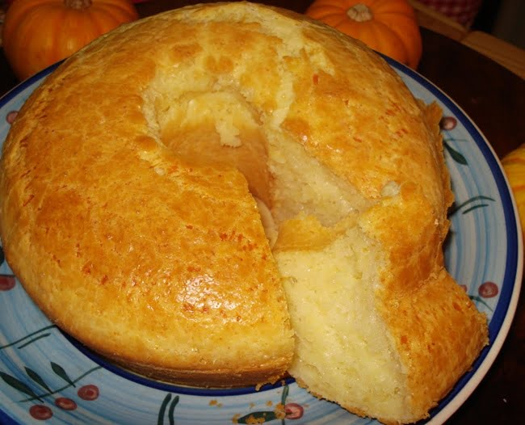

BOLO DE QUEIJO
INGREDIENTES: Leite integral, leite condensado, farinha de trigo enriquecida com ferro e ácido fólico, açúcar, ovo, gordura vegetal, queijo parmezão ralado, fermentos químicos pirofosfato de sódio, bicarbonato de sódio e fosfato monocálcico.
CONTÉM GLÚTEN E LACTOSE.
Alérgicos: contém leite e derivados, derivados do trigo e ovo.
VALOR: R$25,00